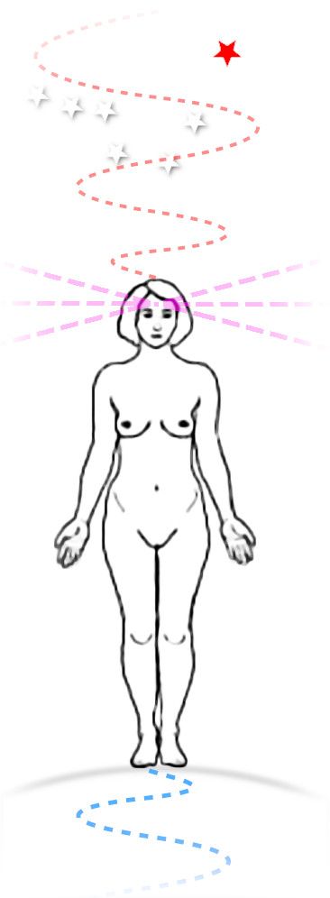

Feng Shui & Geomancy
This site explains Taoist Classical Feng Shui, a Chinese method of geomancy. It covers the basic theory, insight into more advanced metaphysics and includes practical design suggestions.
Introduction
Geomancy is art of reading, divination, signs from the Earth.
Geo = earth,
Mancy = divination or reading.
Most ancient cultures had systems, some more sophisticated than others. Aboriginal, African, Indian, Mayan, Egyptian, Norse, Native N. American and the Chinese, etc.
Chinese Classical Feng Shui was an amalgam of various "Schools" (Form, Compass, Flying Star) and developed into a very detailed system of analysis and instruction. It included localised energetic interactions, planetary movement, horoscopes.
Heavenly forces (planets and cosmic forces)

Earthly forces (gravity, strong & weak nuclear)
Everything is connected, the planets, the elements and all the living things. What we experience externally reflects our internal universe. Hence our environment is a reflection of ourselves and vice versa.
Balancing the external environment has a direct effect upon our internal condition and helps us to realise our potential.
Nb. Terms hence referred to:
Qi = General Energy
Feng = Wind : energy in the atmosphere, particles.
Shui = Water : energy in ground, mass, gravity affected.
The Chinese Taoists explained energetic interactions, upon and with the environment, based on their knowledge and explanation of creation.
The Philosophy is in-depth and well thought through. In fact it could be regarded today as advanced particle (meta) physics.
The theory is the same as for all the Taoist Practices including Tai Qi Chuan, Qi Gong, Acupuncture and Internal Alchemy etc.
The Creation of Qi (energy), it's various types, qualities, and interactions is key.
There are a number of different Schools of Feng Shui. The Form School, Compass School, Black Sect School and Flying Star School. The Classical School was an amalgam of the Form and Compass Schools and is what I am explaining on this website.